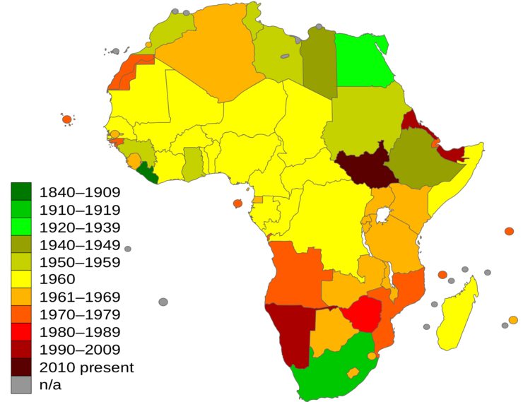

아프리카
[ 목차 ]
- 아프리카란
- 아프리카 교통
1. 아프리카란?
아프리카(Africa, 음역: 아비리가(阿非利加))는 아시아 다음으로 면적이 넓고 인구가 많은 대륙이다. 면적은 주변 섬을 합하여 3천2십만km²으로, 지표 표면의 6%이며, 육지 면적의 20.4%를 차지한다.[2] 61개 영토에 11억 명(2014년 기준)이 살고 있으며, 세계 인구의 14.8%에 해당한다. 아프리카 대륙 주변으로 북쪽에는 지중해, 북동쪽에는 수에즈 운하와 홍해, 남동쪽에는 인도양, 서쪽에는 대서양이 있다. 이 대륙에는 분쟁 지역인 서사하라를 빼고 마다가스카르와 여러 도서 지역을 포함하여 총 54개국이 있다.
아프리카 중 특히 동아프리카는 학계에서 현생 인류와 사람과 계열의 발상지로 여겨지는데, 초기 인류와 그 조상의 발견되었으며, 약 200,000여 년 전 에티오피아에서 발견된 초기 호모 사피엔스와 더불어 7백만여 년 전에 발견된 사헬란트로푸스 차덴시스, 오스트랄로피테쿠스 아프리카누스, 오스트랄로피테쿠스 아파렌시스, 호모 에렉투스, 호모 하빌리스, 호모 에르가스테르 등의 많은 유인원들도 발견되었다.[3]
적도가 지나며, 다양한 기후대가 나타난다. 또 북부 온대에서 남부 온대가 걸쳐있는 유일한 대륙이기도 하다.[4]

2. 아프리카교통?
아프리카의 교통체계는 식민지시대에 식민국의 전략적 의도와 경제적 필요에 따라 광산·농업·임산자원의 개발·반출에 적합하도록 정비되었다. 각국의 식민지정부는 개별적으로 자국 식민지에 철도망을 건설하였으나, 이웃 여러 나라와의 연관성은 고려되지 않았다.
철도는 화물수송을 위주로 하며 현재에도 총수송량의 약 3/4은 수출용 화물이다. 아프리카의 철도 총연장은 약 7만5,000km 로 약 30%는 남아프리카공화국에 집중되어 있으며, 철도수입의 절반 이상을 남아프리카공화국에서 차지하고 있다. 남아프리카공화국 이외 지역의 철도는 각 영역마다 궤도가 다르고 정합성(整合性)이나 제휴성이 약했지만, 독립 뒤에는 일부 지역에서 기존 노선의 연장과 새로운 노선이 건설되었다. 특히 내륙국인 잠비아와 탄자니아의 다르에스살람을 연결한 〈탄자니아－잠비아 철도〉는 중국의 원조와 기술협력에 의해 완성되었다.
한편, 철도와 수운(水運)의 이용이 한정된 아프리카에서는 도로가 매우 중요한 역할을 담당하고 있다. 농산품의 집하·운송과 소비물자 및 승객의 수송에 편리한 소형트럭을 많이 이용하고 있지만, 도로포장률이 낮고 도로의 유지·보수 등이 완전하지 못하다. 이러한 문제점을 해결하기 위해 UN의 아프리카경제위원회는 몸바사와 라고스를 잇는 사하라횡단고속도로와 서아프리카의 라고스에서 다카르를 잇는 고속도로의 건설을 계획하고 있다.도시간(間)의 교통은 자동차를 이용하고 있으나, 지역간 운반 교통으로는 북부지방에서는 낙타, 중부지방에서는 흑인, 남부에서는 소를 많이 이용한다. 도로망의 발달은 식민지 통치를 위한 정치적·군사적 필요성에서 시작되었으며, 경제 산업상의 목적은 그 다음이었다. 따라서 독립이 된 지금은 도로가 크게 부족하다.
수운(水運)은 콩고 강, 나일 강, 니제르 강, 잠베지 강 등이 하천 교통으로 이용되고 있으며, 해안지방의 도시인들은 국제적인 무역항이 많다. 특히 수에즈 운하는 유럽과 아시아의 지름길 역할을 한다.
| 시베리아 횡단 열차 |
| 1 day |
동물들 |
가이드의 지시에 따라 관람
|
| 먹이 |
| 2 day |
먹이 |
먹이는 가이드에 지시에 따라 준다
|